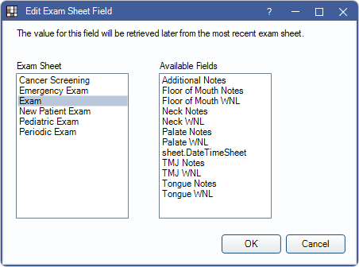

Sheet Static Text Field
Static text fields are Sheet Fields Types used for fixed text.
In Edit Sheet Def, click Static Text.

Alternatively, double-click an existing Static Text field from the Fields list to edit.
Also see, Sheet Field Types.
Users can optionally include output text fields within the fixed text. Static Text Fields are useful for field or checkbox labels or for larger paragraphs. If the sheet type can be previewed, Static Text is editable when filling out the form.
Text Box: Enter text in the large box to appear on the Sheet.
Insert Static Text Field: In the text box, position and click where the field is to be inserted. Click a field from the Static Text Fields List. Information is automatically inserted when the Sheet is generated for a specific patient.
Font: These properties affect the appearance of the text.
- Name: Select the font to use for the Static Text Field. We recommend using common fonts (e.g., Times New Roman, Arial, Courier) and testing sheets on a device you plan to support.
Font support is dependent on the device or browser used to view the web form. If a device or browser does not support a font, a different font will be substituted and this can affect layout of the sheet.
- Size: Font point size.
- Bold: Check to mark the text as bold.
- Color: Single-click the color block to Select Text Color.
- Align: The position of text within the field (right, left, center).
Growth Behavior: This attribute can be set when it is not known ahead of time how large the text input will be. Setting the growth behavior causes a field to grow bigger; it will never cause a field to shrink. Click the dropdown to select an option:
- None: No growth behavior.
- Down Local: Typically used for the address because it is not known ahead of time if it will span one or two lines. If the field grows to two lines, the fields immediately below are bumped down (like CityStateZip).
- Down Global: Useful for table style data and letter bodies. Bumps down all fields on the entire sheet that are below the field that's growing.
X/Y Pos: Determines the placement of the upper left corner of the field in relation to the x and y axis. X = horizontal. Y = vertical.
Width: The width of the field. The width of the current Static Text is indicated to the right as a guide. If the text output exceeds the width, the text may be cut off, unless the height is tall enough for text to span multiple lines. To resize the width automatically, based on the currently entered height, click Calculate Width.
Height: The height of the field. If a user increases font size, they may need to increase field height so that all text is visible. To resize the height automatically, based on the currently entered width, click Calculate Height.
Is Payment Option: This option only shows for Statement Sheets. It designates the field as information that shows when payment information is included on a statement.
Include in Mobile: Check to include this Static Text box in the Mobile Sheets.
Lock Text Editing: When checked, the Static Text Fields cannot be edited when the form is open (e.g., by a patient).
Exam Sheet Field: Available for Patient Letter Sheets, and Referral Slip Sheets, Referral Letter Sheets. Insert a field from a custom Exam Sheet within the Static Text box. Position the cursor at the insertion point, click Exam Sheet Field, then select the Exam Sheet and field. Click OK to insert to Exam Sheet Field. The following elements can be pulled:
- radio button groups with reportable names
- misc Checkboxes with reportable names
- misc Input Fields with reportable names
- Combo Boxes
- Output Text Fields
When a new letter is created, fields are populated using information from the most recent Exam Sheet with a matching Exam Sheet Field.
